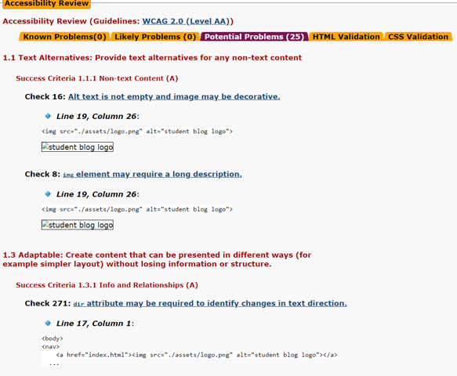
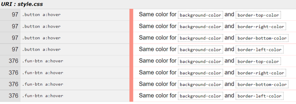
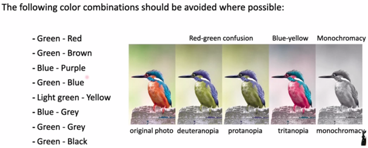

Accessibility is the practice of making your website usable by as many people as possible. It also important to a create a page accessible for both humans and search engines (SEO), by improving the accessibility you also improve the SEO, making your site more findable and visible.
For the HTML code I used AChecker to check the accessibility of the website, since we needed to use it to our previous assignments. I also find the automated test there very good and well explained to a person who has little experience with HTML/CSS. The comments about the “alt text” is a bit difficult to get rid of, most because the alt text is about SEO. The alt-text can basically be whatever you want it to be, as long as it has a context with the image and you make sure it can optimize the SEO, which is more a test-and-fail method.
The test came well out for all the pages and showed me only potential problems. Where most of the potential problems was targeting Line 19 and I was hard for me to understand what was “wrong” with that code-line. I want the user to be able to get redirected to the home-page when clicking on the logo at any page, so I couldn’t find another way to write the line.
For the CSS I used W3C CSS Validation. This is my first time using a CSS automated test, so I don’t know which site that would be best to use, but I know that W3C is a polite site. The image shows the warnings that came up, but I choose not to change anything, because I wanted it to be this way.
The structure and layout have a lot to say for the accessibility and legibility. I’ve worked two years with Graphic Design and I learned how important it was to contain enough space between images and text, but also line-height and letter-spacing. The color-scheme is also important and I’ve always gone for 2-3 colors that fit well together, but also suits for they with decreased accessibility, such as colorblindness. I’ve meet people with dyslexia and dyscalculia and I have always wondered how it is. Although there are many sources on which font is best for people with dyslexia, I’ve learned that font consistent is more important. When considering color blindness, I used a previous lecture from earlier this year as a preference.
I wanted to implement OsloMet color-scheme with yellow and blue, and started using yellow as the color of my headings, but I found not so suitable
with the white background as it could be difficult to read what the headings say, especially if nigh-light on your desktop or mobile devices,
which many people use during the night, so I changed the heading to blue and used more yellow when designing the pictures.
All the images are made in Adobe Illustrator. The images of the campuses are picked from OsloMet